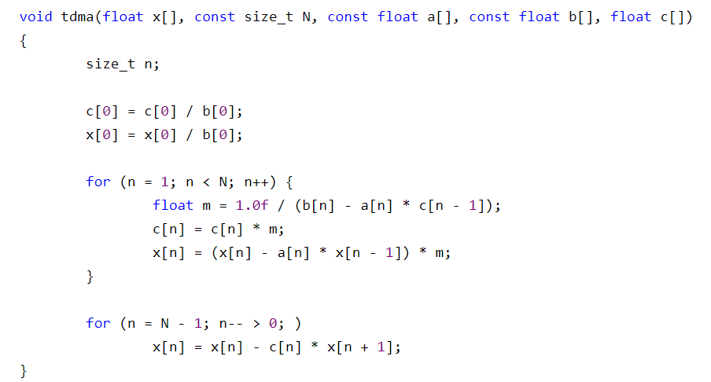

年级 2021级 班级 电车所研究生一班 姓名 郜佳雨
2.2 编程实现追赶法求解三对角方程组的算法，并考虑如下梯形电阻电路问题

2.3 方程组的性态和矩阵条件数实验
import numpy as np
a=[0,-2,-2,-2,-2,-2,-2,-2]
b=[2,5,5,5,5,5,5,5]
c=[-2,-2,-2,-2,-2,-2,-2]
d=[8.148,0,0,0,0,0,0,0]
for i in range(1,len(b)):
a[i] = a[i]/b[i-1]
b[i] = b[i]-c[i-1]*a[i]
d[i] = d[i]-a[i]*d[i-1]
d[-1] = d[-1]/b[-1]
for i in range(len(b)-2,-1,-1):
d[i] = (d[i]-c[i]*d[i+1])/b[i]
print(d)
电流 I=(8.154.072.041.020.510.250.120.05)T
import numpy as np
def set_A_matrix(n,cho):
A0 = np.empty((n,n))
A1 = np.empty((n,n))
for i in range(0,n):
for j in range(0,n):
A0[i,j]=(1+0.1*(i+1))**((j+1)-1)
A1[i,j]=1/((i+j+2)-1)
if cho == 0:
return A0
elif cho == 1:
return A1
def set_B_matrix(n,A):
B = np.empty(n)
for i in range(0,n):
sumA = 0
for j in range(0,n):
sumA = sumA + A[i][j]
B[i] = sumA
return B
for n in [5,10,20]:
A0=set_A_matrix(n,0)
B0=set_B_matrix(n,A0)
cond_A0=np.linalg.cond(A0,2)
X0=np.linalg.solve(A0,B0)
print(X0)
A1=set_A_matrix(n,1)
B1=set_B_matrix(n,A1)
cond_A1=np.linalg.cond(A1,2)
X1=np.linalg.solve(A1,B1)
print(X1)
（1）求2-条件数判断是否病态
当n=5时：条件数cond(A0)2=536148.475041
当n=5时：条件数cond(A1)2=476607.250242
当n=10时：条件数cond(A0)2=868226210534.163452
当n=10时：条件数cond(A1)2=16024413500363.820312
当n=20时：条件数cond(A0)2=5516884134135433527296.000000
当n=20时：条件数cond(A1)2=1319397616634482176.000000
结果：所有系数矩阵都是病态的，且随着n的增大，病态程度不断增加
（2）求方程组的解
当n=5时：方程组A0X=b的解为：(1,1,1,1,1)T
当n=5时：方程组A1X=b的解为：(1,1,1,1,1)T
当n=10时：方程组A0X=b的解为：(1,1,1,1,1,1,1,1,1,1)T
当n=10时：方程组A1X=b的解为：(1,1,1,1,0.9999,1.0002,0.9997,1.0003,0.9998,1)T
当n=20时：方程组A0X=b的解为：(9.80567700e+02,−7.93444280e+03,2.91142485e+04,−6.32573218e+04,8.84592794e+04,−7.85146698e+04,3.44961816e+04,1.29635936e+04,−3.58380358e+04,3.23771765e+04,−1.83665797e+04,7.07264750e+03,−1.75285920e+03,1.89505200e+02,4.61136000e+01,−2.45338000e+01,6.85370000e+00,2.18900000e−01,1.05930000e+00,9.98000000e−01)T
当n=20时：方程组A1X=b的解为：(1,1.0001,0.9959,1.0766,0.2341,5.5365,−15.6104,38.1681,−43.8265,9.8102,51.4242,−55.2456,−6.0793,55.0062,−38.7013,15.7219,−9.2882,9.179,−1.4831,1.0815)T
结果：x1与精确解吻合，x2与精确解稍有差异，x3与精确解差别很大。可见随着n的增大，矩阵病态越来越严重。
（3）当n=10时，增加扰动项，观察解的变化
方程A0X=b的解是(0.9429,1.3352,0.1296,2.3111,−0.2627,1.8063,0.6585,1.0925,0.9855,1.001)T
方程A1X=b的解是(9.99100e−01,1.05180e+00,2.14900e−01,6.12660e+00,−1.63270e+01,3.34184e+01,−3.21640e+01,1.71344e+01,−4.63600e−01,9.00000e−03)T
结果：比较可见，系数矩阵出现微小变动，导致解出现较大变化。说明n=10时，系数矩阵是病态的。
- 对于2.2的问题，当满足∥bi∥>∥ai∥+∥ci∥时，可以采用Tomas算法求解

- 实验结果表明当稀疏矩阵病态时，整个系统过于敏感，当对系数A矩阵进行微小扰动时，会对结果产生较大的影响。
- 常见的可以使用SVD方法来求解系数矩阵病态的线性方程组